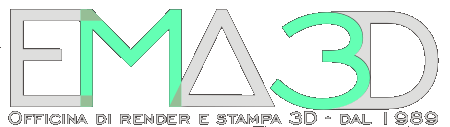
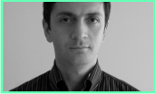

 |
|||
|
Grafica tridimensionale per rendering fotorealistici e Stampa 3d
Da molti anni e con passione ci occupiamo di grafica tridimensionale, realizzando rendering fotorealistici e animazioni 3d per architettura, industria, arredamento, e altre esigenze con un'elevata qualita' e a prezzi concorrenziali. I nostri servizi includono anche la stampa 3D o prototipazione solida, da cui si ottengono manufatti plastici partendo da file di progetto cad o, se richiesto, disegnandoli per voi. |
Pochi altri possono vantare d'esser passati per l'intera storia della computer grafica tridimensionale!
Lo studio EMA3D, e' sito tra Perugia e Foligno, a Bastia Umbra, ma lavora anche in ambito nazionale. Per saperne di piu' Vi invitiamo a contattarci ai seguenti recapiti: telefono: 333 8981874 mail: emanuele.and@yandex.com video-call: Zoom e Skype Studio EMA3D Bastia Umbra (Pg) P.iva: 02719470540 |
||
|
|
I
nostri servizi * Realizzazione di Render fotorealistici e fotografici, animazioni 3d di ville, palazzine, edifici in generale e tutto cio' che concerne l'architettura. * Realizzazione di Plastici architettonici o prototipi meccanici tramite stampa 3d FDM dei vostri progetti CAD al computer, o anche semplici schizzi. La prototipazione solida e' utilizzabile anche per realizzare altri tipi di oggetti che valuteremo o realizzeremo insieme a Voi. |
*
Modellazione 3d dei vostri prodotti a catalogo con rendering fotografici e naturali grazie ad un controllo maggiore su luci, ombre e riflessi rispetto alla fotografia tradizionale e con un contenimento dei costi grazie alla realizzazione di stage virtuali.
* Fotoritocchi e fotomontaggi di alta qualita' per architettura, pubblicita', siti web, e-commerce o altro. * Studio grafico e impaginazione di broshure depliant e cataloghi. Guardate le nostre animazioni 3D sul canale EMA3D! | |
1989: Gli inizi I primi esperimenti di grafica tridimensionale risalgono al 1989 quando,al tempo delle scuole superiori con un Commodore Amiga 500, iniziai a modellare semplici oggetti in 3d. Il software era Imagine della Impulse Inc. evoluzione di Turbosilver. |
Nel 1990 ricevetti in regalo da mio padre un Amiga 1200 con scheda acceleratrice Blizzard (processore, coprocessore matematico e ben 6MB di Ram) e potei sviluppare i primi lavori di qualit superiore. Nel 1995 realizzai il primo grande lavoro architettonico, iniziato con l'Amiga ma | terminato ormai con un PC-DOS, per un RayTracing in alta risoluzione. Mi cimentai poi nell'animazione 3d dell'impatto ambientale che avrebbe avuto un imponente opera pubblica ad Assisi: un minimetro. Relizzai successivamente alcune sigle televisive per |
un'emittente di Perugia, utilizzando Imagine v.1.1 per Windows. Nei primi anni 2000 la passione divent professione.  |